Australia

| Capital: | Canberra |
|---|---|
| Languages: | English |
| Currency: | Australian Dollar (AUD) |
| Population: | 25,599,500 |
Australia, officially the Commonwealth of Australia, is an
Oceanian country comprising the mainland of the Australian
continent, the island of Tasmania, and numerous smaller
islands. It is the world's sixth-largest country by total
area. Neighbouring countries include Papua New Guinea,
Indonesia and East Timor to the north; the Solomon Islands
and Vanuatu to the north-east; and New Zealand to the
south-east. For at least 40,000 years before the first
British settlement in the late 18th century, Australia was
inhabited by indigenous Australians, who spoke languages
grouped into roughly 250 language groups. After the European
discovery of the continent by Dutch explorers in 1606,
Australia's eastern half was claimed by Great Britain in
1770 and initially settled through penal transportation to
the colony of New South Wales from 26 January 1788. The
population grew steadily in subsequent decades; the
continent was explored and an additional five self-governing
crown colonies were established. On 1 January 1901, the six
colonies federated, forming the Commonwealth of Australia.
Since federation, Australia has maintained a stable liberal
democratic political system that functions as a federal
parliamentary democracy and constitutional monarchy
comprising six states and several territories. The
population of 23.6 million is highly urbanised and heavily
concentrated in the eastern states and on the coast.
Australia is a developed country and one of the wealthiest
in the world, with the world's 12th-largest economy. In 2014
Australia had the world's fifth-highest per capita income.
Australia's military expenditure is the world's
13th-largest. With the second-highest human development
index globally, Australia ranks highly in many international
comparisons of national performance, such as quality of
life, health, education, economic freedom, and the
protection of civil liberties and political rights.
Australia is a member of the United Nations, G20,
Commonwealth of Nations, ANZUS, Organisation for Economic
Co-operation and Development (OECD), World Trade
Organization, Asia-Pacific Economic Cooperation, and the
Pacific Islands Forum
Brazil
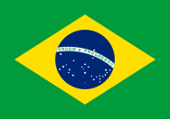
| Capital: | Brasilia |
|---|---|
| Languages: | Portuguese |
| Currency: | Real (BRL) |
| Population: | 210,147,125 |
Brazil, officially the Federative Republic of Brazil, is the
largest country in both South America and the Latin American
region. It is the world's fifth-largest country, both by
geographical area and by population. It is the largest
Portuguese-speaking country in the world, and the only one
in the Americas. Bounded by the Atlantic Ocean on the east,
Brazil has a coastline of 7,491 km (4,655 mi). It borders
all other South American countries except Ecuador and Chile
and occupies 47.3 percent of the continent of South America.
Its Amazon River basin includes a vast tropical forest, home
to diverse wildlife, a variety of ecological systems, and
extensive natural resources spanning numerous protected
habitats. This unique environmental heritage makes Brazil
one of 17 megadiverse countries, and is the subject of
significant global interest and debate regarding
deforestation and environmental protection. Brazil was
inhabited by numerous tribal nations prior to the landing in
1500 of explorer Pedro Álvares Cabral, who claimed the area
for the Portuguese Empire. Brazil remained a Portuguese
colony until 1808, when the capital of the empire was
transferred from Lisbon to Rio de Janeiro. In 1815, the
colony was elevated to the rank of kingdom upon the
formation of the United Kingdom of Portugal, Brazil and the
Algarves. Independence was achieved in 1822 with the
creation of the Empire of Brazil, a unitary state governed
under a constitutional monarchy and a parliamentary system.
The ratification of the first constitution in 1824 led to
the formation of a bicameral legislature, now called the
National Congress. The country became a presidential
republic in 1889 following a military coup d'état. An
authoritarian military junta came to power in 1964 and ruled
until 1985, after which civilian governance resumed.
Brazil's current constitution, formulated in 1988, defines
it as a federal republic. The federation is composed of the
union of the Federal District, the 26 states, and the 5,570
municipalities. Brazil's economy is the world's
ninth-largest by nominal GDP and seventh-largest by GDP
(PPP) as of 2015. A member of the BRICS group, Brazil until
2010 had one of the world's fastest growing major economies,
with its economic reforms giving the country new
international recognition and influence. Brazil's national
development bank plays an important role for the country's
economic growth. Brazil is a founding member of the United
Nations, the G20, BRICS, Unasul, Mercosul, Organization of
American States, Organization of Ibero-American States, CPLP
and the Latin Union. Brazil is a regional power in Latin
America and a middle power in international affairs, with
some analysts identifying it as an emerging global power.
One of the world's major breadbaskets, Brazil has been the
largest producer of coffee for the last 150 years.
Canada
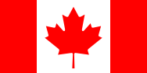
| Capital: | Ottawa |
|---|---|
| Languages: | English |
| Currency: | Canadaian Dollar (CAD) |
| Population: | 37,797,496 |
Canada is a country, consisting of ten provinces and three
territories, in the northern part of the continent of North
America. It extends from the Atlantic to the Pacific and
northward into the Arctic Ocean, covering 9.98 million
square kilometres (3.85 million square miles) in total,
making it the world's second-largest country by total area
and the fourth-largest country by land area. Canada's common
border with the United States forms the world's longest land
border. Canada is sparsely populated overall, the majority
of its land territory being dominated by forest and tundra
as well as the mountain range of the Rocky Mountains; about
four-fifths of the population live near to the southern
border. The majority of Canada has a cold or severely cold
winter climate, but southerly areas are warm in summer. The
land now called Canada has been inhabited for millennia by
various Aboriginal peoples. Beginning in the late 15th
century, British and French colonies were established on the
region's Atlantic coast. As a consequence of various
conflicts, the United Kingdom gained and lost North American
territories until left, in the late 18th century, with what
mostly comprises Canada today. Pursuant to the British North
America Act, on July 1, 1867, three colonies joined to form
the autonomous federal Dominion of Canada. This began an
accretion of provinces and territories to the new
self-governing Dominion. In 1931, Britain granted Canada
near total independence with the Statute of Westminster 1931
and full sovereignty was attained when the Canada Act 1982
severed the vestiges of legal dependence on the British
parliament. Canada is a federal parliamentary democracy and
a constitutional monarchy, Queen Elizabeth II being the
current head of state. The country is officially bilingual
at the federal level. It is one of the world's most
ethnically diverse and multicultural nations, the product of
large-scale immigration from many countries, with a
population of approximately 35 million as of 2015. Its
advanced economy is the eleventh largest in the world,
relying chiefly upon its abundant natural resources and
well-developed international trade networks. Canada's long
and complex relationship with the United States has had a
significant impact on its economy and culture. Canada is a
developed country and one of the wealthiest in the world,
with the tenth highest nominal per capita income globally,
and the eighth highest ranking in the Human Development
Index. It ranks among the highest in international
measurements of government transparency, civil liberties,
quality of life, economic freedom, and education. Canada is
a Commonwealth Realm member of the Commonwealth of Nations,
a member of the Francophonie, and part of several major
international and intergovernmental institutions or
groupings including the North Atlantic Treaty Organization,
the G8, the Group of Ten, the G20, the North American Free
Trade Agreement and the Asia-Pacific Economic Cooperation
forum.
China
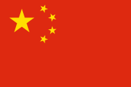
| Capital: | Beijing |
|---|---|
| Languages: | Standard Chinese |
| Currency: | Renminbi (CNY) |
| Population: | 1,427,647,786 |
China, officially the People's Republic of China (PRC), is a
sovereign state in East Asia. It is the world's most
populous country, with a population of over 1.35 billion.
The PRC is a single-party state governed by the Communist
Party, with its seat of government in the capital city of
Beijing. It exercises jurisdiction over 22 provinces, five
autonomous regions, four direct-controlled municipalities
(Beijing, Tianjin, Shanghai and Chongqing), and two mostly
self-governing special administrative regions (Hong Kong and
Macau); while claiming sovereignty over Taiwan. Covering
approximately 9.6 million square kilometers, China is the
world's second-largest country by land area, and either the
third or fourth-largest by total area, depending on the
method of measurement.[i] China's landscape is vast and
diverse, ranging from forest steppes and the Gobi and
Taklamakan deserts in the arid north to subtropical forests
in the wetter south. The Himalaya, Karakoram, Pamir and Tian
Shan mountain ranges separate China from South and Central
Asia. The Yangtze and Yellow Rivers, the third- and
sixth-longest in the world, run from the Tibetan Plateau to
the densely populated eastern seaboard. China's coastline
along the Pacific Ocean is 14,500 kilometres (9,000 mi)
long, and is bounded by the Bohai, Yellow, East and South
China Seas. China is a cradle of civilization, with its
known history beginning with an ancient civilization - one
of the world's earliest - that flourished in the fertile
basin of the Yellow River in the North China Plain. For
millennia, China's political system was based on hereditary
monarchies, known as dynasties, beginning with the
semi-mythological Xia of the Yellow River basin(c. 2800
BCE)[citation needed]. Since 221 BCE, when the Qin Dynasty
first conquered several states to form a Chinese empire, the
country has expanded, fractured and reformed numerous times.
The Republic of China (ROC) overthrew the last dynasty in
1911, and ruled the Chinese mainland until 1949. After World
War II, the Communist Party defeated the nationalist
Kuomintang in mainland China and established the People's
Republic of China in Beijing on 1 October 1949, while the
Kuomintang relocated the ROC government to its present
capital of Taipei. China had the largest and most complex
economy in the world for most of the past two thousand
years, during which it has seen cycles of prosperity and
decline. Since the introduction of economic reforms in 1978,
China has become one of the world's fastest-growing major
economies. As of 2014, it is the world's second-largest
economy by nominal total GDP and largest by purchasing power
parity (PPP). China is also the world's largest exporter and
second-largest importer of goods. China is a recognized
nuclear weapons state and has the world's largest standing
army, with the second-largest defence budget. The PRC has
been a United Nations member since 1971, when it replaced
the ROC as a permanent member of the U.N. Security Council.
China is also a member of numerous formal and informal
multilateral organizations, including the WTO, APEC, BRICS,
the Shanghai Cooperation Organization, the BCIM and the
G-20. China is a great power and a major regional power
within Asia, and has been characterized as a potential
superpower.
Cuba
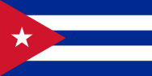
| Capital: | Havana |
|---|---|
| Languages: | Spanish |
| Currency: | Peso (CUP), Convertible pesoa (CUC) |
| Population: | 11,209,628 |
Cuba, officially the Republic of Cuba, is a country
comprising the islands of Cuba, Isla de la Juventud and
several archipelagos in the Caribbean Sea. The capital and
largest city Havana is 365 km (227 mi) from Miami, Florida,
and geographically it is considered part of North America.
Culturally, Cuba is considered part of Latin America. Prior
to Spanish colonization in the late 15th century, Cuba was
inhabited by Amerindian tribes. It remained a colony of
Spain until the Spanish-American War of 1898, which led to
nominal independence as a de facto U.S. protectorate in
1902. As a fragile republic, Cuba attempted to strengthen
its democratic system, but mounting political radicalization
and social strife culminated in the dictatorship of
Fulgencio Batista in 1952. Further unrest and instability
led to Batista's ousting in January 1959 by the July 26
movement, which afterwards established a government under
the leadership of Fidel Castro. Since 1965, the country has
been governed by the Communist Party of Cuba. Cuba is the
largest island in the Caribbean, and the second-most
populous after Hispaniola, with over 11 million inhabitants.
It is a multiethnic country whose people, culture and
customs derive from diverse origins, including the
aboriginal Taíno and Ciboney peoples, the long period of
Spanish colonialism, the introduction of African slaves, and
a close relationship with the Soviet Union in the Cold War.
Although it fares poorly in metrics of political and
economic freedom, Cuba is ranked very high in human
development by the United Nations, and performs well in
health and education. In 2015, it became the first country
to eradicate mother-to-child transmission of HIV and
syphilis, a milestone hailed by the World Health
Organization as "one of the greatest public health
achievements possible".
Egypt
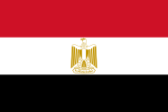
| Capital: | Cairo |
|---|---|
| Languages: | Arabic |
| Currency: | Egyptian pound (EGP) |
| Population: | 99,581,200 |
Egypt, officially the Arab Republic of Egypt, is a
transcontinental country spanning the northeast corner of
Africa and southwest corner of Asia, via a land bridge
formed by the Sinai Peninsula. It is the world's only
contiguous Eurafrasian nation. Most of Egypt's territory of
1,010,408 square kilometres (390,000 sq mi) lies within the
Nile Valley. Egypt is a Mediterranean country. It is
bordered by the Gaza Strip and Israel to the northeast, the
Gulf of Aqaba to the east, the Red Sea to the east and
south, Sudan to the south and Libya to the west. Egypt has
one of the longest histories of any modern country, arising
in the tenth millennium BC as one of the world's first
nation states. Considered a cradle of civilisation, Ancient
Egypt experienced some of the earliest developments of
writing, agriculture, urbanisation, organised religion and
central government in history. Iconic monuments such as the
Giza Necropolis and its Great Sphinx, as well the ruins of
Memphis, Thebes, Karnak, and the Valley of the Kings,
reflect this legacy and remain a significant focus of
archaeological study and popular interest worldwide. Egypt's
rich cultural heritage is an integral part of its national
identity, having endured and at times assimilated various
foreign influences, including Greek, Persian, Roman, Arab,
Ottoman, and European. Although Christianised during the
Common Era, it was subsequently Islamised due to the Islamic
conquests of the 7th century. With over 90 million
inhabitants, Egypt is the most populous country in North
Africa and the Arab World, the third-most populous in Africa
(after Nigeria and Ethiopia), and the fifteenth-most
populous in the world. The great majority of its people live
near the banks of the Nile River, an area of about 40,000
square kilometres (15,000 sq mi), where the only arable land
is found. The large regions of the Sahara desert, which
constitute most of Egypt's territory, are sparsely
inhabited. About half of Egypt's residents live in urban
areas, with most spread across the densely populated centres
of greater Cairo, Alexandria and other major cities in the
Nile Delta. Modern Egypt is considered to be a regional and
middle power, with significant cultural, political, and
military influence in North Africa, the Middle East and the
Muslim world. Its economy is one of the largest and most
diversified in the Middle East, with sectors such as
tourism, agriculture, industry and services at almost equal
production levels. In 2011, longtime President Hosni Mubarak
stepped down amid mass protests. Later elections saw the
rise of the Muslim Brotherhood, which was ousted by the army
a year later amid mass protests.
Ethiopia
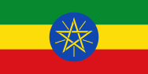
| Capital: | Addis Ababa |
|---|---|
| Languages: | Amharic |
| Currency: | Birr (ETB) |
| Population: | 109,224,414 |
Ethiopia, officially known as the Federal Democratic
Republic of Ethiopia, is a country located in the Horn of
Africa. It is bordered by Eritrea to the north and
northeast, Djibouti and Somalia to the east, Sudan and South
Sudan to the west, and Kenya to the south. With over 100
million inhabitants, Ethiopia is the most populous
landlocked country in the world, as well as the second-most
populous nation on the African continent after Nigeria. It
occupies a total area of 1,100,000 square kilometres
(420,000 sq mi), and its capital and largest city is Addis
Ababa. Some of the oldest evidence for anatomically modern
humans has been found in Ethiopia, which is widely
considered the region from which Homo sapiens first set out
for the Middle East and points beyond. According to
linguists, the first Afroasiatic-speaking populations
settled in the Horn region during the ensuing Neolithic era.
Tracing its roots to the 2nd millennium BC, Ethiopia was a
monarchy for most of its history. During the first centuries
AD the Kingdom of Aksum maintained a unified civilization in
the region. followed by Abyssinia circa 1137. Ethiopia
derived prestige with its uniquely successful military
resistance during the late 19th-century Scramble for Africa,
becoming the only African country to defeat a European
colonial power and retain its sovereignty. Subsequently,
many African nations adopted the colors of Ethiopia's flag
following their independence. It was the first independent
African member of the 20th-century League of Nations and the
United Nations. In 1974, at the end of Haile Selassie's
reign, power fell to a communist military junta known as the
Derg, backed by the Soviet Union, until it was defeated by
the EPRDF, which has ruled since about the time of the
collapse of the USSR in 1991. Ethiopia is a multilingual
nation with around 80 ethnolinguistic groups, the three
largest of which are the Tigray, Oromo and Amhara. Most
people in the country speak Afroasiatic languages of the
Cushitic or Semitic branches. Additionally, Omotic languages
are spoken by Omotic ethnic minority groups inhabiting the
southern regions, and languages from the Nilo-Saharan phylum
are also spoken by the nation's Nilotic ethnic minorities.
Ethiopia is the origin of the coffee bean. It is a land of
natural contrasts, with its vast fertile West, jungles, and
numerous rivers, the world's hottest settlement of Dallol in
its north, Africa's largest continuous mountain ranges and
the largest cave in Africa at Sof Omar. Ethiopia has the
most UNESCO World Heritage Sites in Africa. Ethiopia's
ancient Ge'ez script, also known as Ethiopic, is one of the
oldest alphabets still in use in the world. The Ethiopian
calendar, which is seven years and around three months
behind the Gregorian calendar, co-exists alongside the Oromo
calendar. A slight majority of the population adheres to
Christianity (mainly the Ethiopian Orthodox Tewahedo Church
and Pentay), while around a third follows Islam (primarily
the Sunni denomination). The country is the site of the
Hijrah to Abyssinia and the oldest Muslim settlement in
Africa at Negash. A substantial population of Ethiopian
Jews, known as Beta Israel, resided in Ethiopia until the
1980s but most of them have since gradually emigrated to
Israel. Ethiopia is one of the founding members of the UN,
the Group of 24 (G-24), the Non-Aligned Movement, G-77 and
the Organisation of African Unity, with Addis Ababa serving
as the headquarters of the African Union, the Pan African
Chamber of Commerce and Industry, the UNECA, African
Aviation Training HQ, the African Standby Force and much of
global NGOs focused on Africa. Despite being the main source
of the Nile, the longest river on Earth, Ethiopia underwent
a series of famines in the 1980s, exacerbated by civil wars
and adverse geopolitics. The country has begun to recover
recently and now has the largest economy (by GDP) in East
Africa and Central Africa. According to Global Fire Power,
Ethiopia has the 46th most powerful military in the world.
Germany
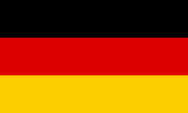
| Capital: | Berlin |
|---|---|
| Languages: | German |
| Currency: | Euro (EUR) |
| Population: | 83,019,200 |
Germany, officially the Federal Republic of Germany, is a
federal parliamentary republic in western-central Europe. It
includes 16 constituent states and covers an area of 357,021
square kilometres (137,847 sq mi) with a largely temperate
seasonal climate. Its capital and largest city is Berlin.
With 81 million inhabitants, Germany is the most populous
member state in the European Union. After the United States,
it is the second most popular migration destination in the
world. Various Germanic tribes have occupied northern
Germany since classical antiquity. A region named Germania
was documented before 100 CE. During the Migration Period
the Germanic tribes expanded southward. Beginning in the
10th century, German territories formed a central part of
the Holy Roman Empire. During the 16th century, northern
German regions became the centre of the Protestant
Reformation. The rise of Pan-Germanism inside the German
Confederation resulted in the unification of many of the
German states in 1871 into the Prussian-dominated German
Empire. After World War I and the German Revolution of
1918-1919, the Empire was replaced by the parliamentary
Weimar Republic. The establishment of the Third Reich in
1933 led to World War II and the Holocaust. After 1945,
Germany split into two states, East Germany and West
Germany. In 1990, the country was reunified. In the 21st
century, Germany is a great power and has the world's
fourth-largest economy by nominal GDP, as well as the
fifth-largest by PPP. As a global leader in several
industrial and technological sectors, it is both the world's
third-largest exporter and importer of goods. Germany is a
developed country with a very high standard of living
sustained by a skilled and productive society. It upholds a
social security and universal health care system,
environmental protection and a tuition-free university
education. Germany was a founding member of the European
Union in 1993. It is part of the Schengen Area, and became a
co-founder of the Eurozone in 1999. Germany is a member of
the United Nations, NATO, the G8, the G20, and the OECD. The
national military expenditure is the 9th highest in the
world. Known for its rich cultural history, Germany has been
continuously the home of influential artists, philosophers,
musicians, sportsmen, entrepreneurs, scientists and
inventors.
Guatemala
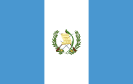
| Capital: | Guatemala City |
|---|---|
| Languages: | Spanish |
| Currency: | Quetzal (GTQ) |
| Population: | 17,263,239 |
Guatemala, officially the Republic of Guatemala, is a
country in Central America bordered by Mexico to the north
and west, the Pacific Ocean to the southwest, Belize to the
northeast, the Caribbean to the east, Honduras to the east
and El Salvador to the southeast. With an estimated
population of around 15.8 million, it is the most populous
state in Central America. A representative democracy,
Guatemala's capital and largest city is Nueva Guatemala de
la Asunción, also known as Guatemala City. The territory of
modern Guatemala once formed the core of the Mayan
civilization, which extended across Mesoamerica. Most of the
country was conquered by the Spanish in the 16th century,
becoming part of the viceroyalty of New Spain. Guatemala
attained independence in 1821 as part of the Federal
Republic of Central America, which dissolved in 1841. From
the mid to late 19th century, Guatemala experienced chronic
instability and civil strife. Beginning in the early 20th
century, it was ruled by a series of dictators backed by the
United Fruit Company and the United States government. In
1944, authoritarian leader Jorge Ubico was overthrown by a
pro-democratic military coup, initiating a decade-long
revolution that led to sweeping social and economic reforms.
A U.S.-backed military coup in 1954 ended the revolution and
installed a dictatorship. From 1960 to 1996, Guatemala
endured a bloody civil war fought between the U.S.-backed
government and leftist rebels, which included massacres of
the Mayan population perpetrated by the military. Since a
United Nations-negotiated peace accord, Guatemala has
witnessed both economic growth and successful democratic
elections, though it continues to struggle with high rates
of poverty, crime, drug trade, and instability. Guatemala's
abundance of biologically significant and unique ecosystems,
which includes a large number of endemic species,
contributes to Mesoamerica's designation as a biodiversity
hotspot. The country is also known for its rich and distinct
culture, which is characterized by a fusion of Spanish and
Indigenous influences.
Iran
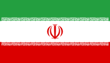
| Capital: | Tehran |
|---|---|
| Languages: | Persian |
| Currency: | Rial (IRR) |
| Population: | 82,531,700 |
Iran, also known as Persia, officially the Islamic Republic
of Iran, is a country in Western Asia. It is bordered to the
northwest by Armenia, the de facto Nagorno-Karabakh, and
Azerbaijan; with Kazakhstan and Russia across the Caspian
Sea; to the northeast by Turkmenistan; to the east by
Afghanistan and Pakistan; to the south by the Persian Gulf
and the Gulf of Oman; and to the west by Turkey and Iraq.
Comprising a land area of 1,648,195 km2 (636,372 sq mi), it
is the second-largest nation in the Middle East and the
18th-largest in the world. With 78.4 million inhabitants,
Iran is the world's 17th most populous nation. It is the
only country that has both a Caspian Sea and an Indian Ocean
coastline. Iran has long been of geostrategic importance
because of its central location in Eurasia and Western Asia,
and its proximity to the Strait of Hormuz. Iran is home to
one of the world's oldest civilizations, beginning with the
formation of the Proto-Elamite and Elamite kingdoms in
3200–2800 BC. The Iranian Medes unified the area into the
first of many empires in 625 BC, after which it became the
dominant cultural and political power in the region. Iran
reached the pinnacle of its power during the Achaemenid
Empire founded by Cyrus the Great in 550 BC, which at its
greatest extent comprised major portions of the ancient
world, stretching from parts of the Balkans
(Thrace-Macedonia, Bulgaria-Paeonia) and Eastern Europe
proper in the west, to the Indus Valley in the east, making
it the largest empire the world had yet seen. The empire
collapsed in 330 BC following the conquests of Alexander the
Great. The Parthian Empire emerged from the ashes and was
succeeded by the Sassanid Dynasty in 224 AD, under which
Iran again became one of the leading powers in the world,
along with the Roman-Byzantine Empire, for a period of more
than four centuries. In 633 AD, Rashidun Muslims invaded
Iran and conquered it by 651 AD, largely replacing the
indigenous faiths of Manichaeism and Zoroastrianism. Iran
became a major contributor to the Islamic Golden Age,
producing many influential scientists, scholars, artists,
and thinkers. Establishment of the Safavid Dynasty in 1501,
which promoted Twelver Shia Islam as the official religion,
marked one of the most important turning points in Iranian
and Muslim history. Starting in 1736 under Nader Shah, Iran
reached its greatest territorial extent since the Sassanid
Empire, briefly possessing what was arguably the most
powerful empire at the time. During the 19th century, Iran
irrevocably lost swaths of its territories in the Caucasus
which made part of the concept of Iran for centuries, to
neighboring Imperial Russia. Popular unrest culminated in
the Persian Constitutional Revolution of 1906, which
established a constitutional monarchy and the nation's first
parliament. Following a coup d'état instigated by the U.K.
and the U.S. in 1953, Iran gradually became close allies
with the United States and the rest of the West, remained
secular, but grew increasingly autocratic. Growing dissent
against foreign influence and political repression
culminated in the 1979 Revolution, which led to the
establishment of an Islamic republic on 1 April 1979. Tehran
is the country's capital and largest city, as well as its
leading cultural and economic center. Iran is a major
regional and middle power, exerting considerable influence
in international energy security and the world economy
through its large reserves of fossil fuels, which include
the largest natural gas supply in the world and the
fourth-largest proven oil reserves. Iran's rich cultural
legacy is reflected in part by its 19 UNESCO World Heritage
Sites, the fourth-largest number in Asia and 12th-largest in
the world. Iran is a founding member of the UN, ECO, NAM,
OIC, and OPEC. Its political system is based on the 1979
Constitution which combines elements of a parliamentary
democracy with a theocracy governed by Islamic jurists under
the concept of a Supreme Leadership. A multicultural nation
comprising numerous ethnic and linguistic groups, most
inhabitants are officially Shia, and Persian is the official
language.
Italy
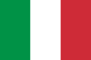
| Capital: | Rome |
|---|---|
| Languages: | Italian |
| Currency: | Euro (EUR) |
| Population: | 60,359,546 |
Italy, officially the Italian Republic, is a unitary
parliamentary republic in Europe.[note 1] Italy covers an
area of 301,338 km2 (116,347 sq mi) and has a largely
temperate climate; due to its shape, it is often referred to
in Italy as lo Stivale (the Boot). With 61 million
inhabitants, it is the 4th most populous EU member state.
Located in the heart of the Mediterranean Sea, Italy shares
open land borders with France, Switzerland, Austria,
Slovenia, San Marino and Vatican City. Since ancient times,
Greek, Etruscan, Celtic, and other cultures have thrived on
the Italian Peninsula. Rome ultimately emerged as the
dominant power, conquering much of the ancient world and
becoming the leading cultural, political, and religious
centre of Western civilisation. During the Dark Ages, the
region suffered sociopolitical collapse amid calamitous
barbarian invasions, but by the 11th century, numerous
Italian city-states rose to great prosperity through
shipping, commerce and banking, and even laid the groundwork
for capitalism. The Renaissance led to a flourishing of
Italian culture, producing famous scholars, artists, and
polymaths such as Leonardo da Vinci, Galileo, Michelangelo
and Machiavelli. Italian explorers such as Marco Polo,
Christopher Columbus, Amerigo Vespucci, and Giovanni da
Verrazzano discovered new routes to the Far East and the New
World, helping to usher in the European Age of Discovery.
Nevertheless, Italy remained politically fragmented and fell
prey to European powers such as France, Spain, and later
Austria, subsequently entering a long period of decline that
lasted until the mid-19th century. After various
unsuccessful attempts, the second and the third wars for
Italian independence resulted in the eventual unification of
most of present-day Italy by 1866. From the late 19th
century to the early 20th century, the new Kingdom of Italy
rapidly industrialised and acquired a colonial empire,
becoming a great power. However, southern and rural areas of
the country remained largely excluded from
industrialisation, fuelling a large and influential
diaspora. Despite being one of the main victors in World War
I, Italy entered a period of economic crisis and social
turmoil, leading the way to the rise of a Fascist
dictatorship in 1922. The subsequent participation in World
War II on the Axis side ended in military defeat, economic
destruction and civil war. In the years that followed, Italy
abolished the monarchy, reinstated democracy, and enjoyed a
prolonged economic boom, thus becoming one of the world's
most developed nations. Italy has the third largest economy
in the Eurozone and the eighth largest economy in the world.
It has a very high level of human development and enjoys the
highest life expectancy in the EU. Italy plays a prominent
role in global military, cultural and diplomatic affairs and
is also considered to be a major regional power in Europe.
Italy is a founding and leading member of the European Union
and the member of numerous international institutions,
including the UN, NATO, the OECD, the OSCE, the WTO, the
G7/G8, G20, the Union for the Mediterranean, the Council of
Europe, Uniting for Consensus, and many more. As a
reflection of its vast cultural wealth, Italy is home to 51
World Heritage Sites, the most in the world, and is one of
the most visited countries.
Jamaica
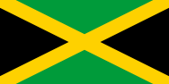
| Capital: | Kingston |
|---|---|
| Languages: | English |
| Currency: | Jamaican Dollar (JMD) |
| Population: | 2,890,299 |
Jamaica is an island country situated in the Caribbean Sea,
comprising the third-largest island of the Greater Antilles.
The island, 10,990 square kilometres (4,240 sq mi) in area,
lies about 145 kilometres (90 mi) south of Cuba, and 191
kilometres (119 mi) west of Hispaniola, the island
containing the nation-states of Haiti and the Dominican
Republic. Jamaica is the fifth-largest island country in the
Caribbean. Previously inhabited by the indigenous Arawak and
Taíno peoples, the island came under Spanish rule following
the arrival of Christopher Columbus in 1494. Named Santiago,
it remained a possession of Spain until 1655, when England
(later Great Britain) conquered the island and renamed it
Jamaica. Under British rule, Jamaica became a leading sugar
exporter, with its plantation economy highly dependent on
slaves imported from Africa, followed later by Chinese and
Indian indentured labor. All slaves were fully emancipated
in 1838, with independence from the United Kingdom achieved
on 6 August 1962. With 2.8 million people, Jamaica is the
third most populous Anglophone country in the Americas
(after the United States and Canada), and the fourth most
populous country in the Caribbean. Kingston is the country's
capital and largest city, with a population of 937,700.
Jamaicans are of predominately African descent, with
significant European, Chinese, Indian, and mixed-race
minorities. Due to a high rate of emigration since the
1960s, Jamaica has a large diaspora around the world,
particularly in Canada, the United Kingdom, and the United
States. Jamaica is a Commonwealth realm, with Queen
Elizabeth II as its monarch and head of state. Her appointed
representative in the country is the Governor-General of
Jamaica, currently Sir Patrick Allen. The head of government
and Prime Minister of Jamaica is Portia Simpson-Miller.
Jamaica is a parliamentary constitutional monarchy with
legislative power vested in the bicameral Parliament of
Jamaica, consisting of an appointed Senate and a directly
elected House of Representatives.
Jordan
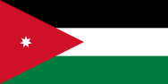
| Capital: | Amman |
|---|---|
| Languages: | Arabic |
| Currency: | Jordanian Dinar (JOD) |
| Population: | 10,407,793 |
Jordan, officially the Hashemite Kingdom of Jordan, is an
Arab kingdom in Western Asia, on the East Bank of the Jordan
River. Jordan is bordered by Saudi Arabia to the south and
east, Iraq to the north-east, Syria to the north, and Israel
and Palestine to the west. Since the dawn of civilization,
the country's location at the crossroads of the Middle East
has served as a strategic nexus connecting Asia, Africa and
Europe. Archaeologists found evidence on inhabitance dating
as far back as the Paleolithic period, later three kingdoms
in Jordan emerged; Edom, Moab and Ammon. The lands were
later part of several empires; most notably Roman Empire,
Nabatean Kingdom and finally the Ottoman Empire in the early
20th century. After the post-World War I division of West
Asia by Britain and France, the Emirate of Transjordan was
officially recognized by the Council of the League of
Nations in 1922. In 1946, Jordan became an independent
sovereign state officially known as The Hashemite Kingdom of
Transjordan. The capture of the West Bank by Jordan during
the 1948 Arab-Israeli War has showed that the Arab Legion
forces known today as the Jordanian Armed Forces were the
most effective among the Arab troops involved in the war.
The same year, Abdullah I took the title King of Jordan. The
name of the state was changed to The Hashemite Kingdom of
Jordan on 1 December 1948. It is a major tourist destination
in the region and is especially popular with expat
westerners seeking to live or study in its capital Amman.
Not only is the Kingdom considered the safest country in the
Middle East, but also considered as the safest Arab country.
In midst of surrounding turmoil it has been greatly
hospitable, accepting refugees from almost all surrounding
conflicts as early as 1948, with most notably the estimated
2 million Palestinian refugees and the 1.5 million Syrian
refugees residing in the country. Jordan continues to
demonstrate hospitality, despite the substantial strain the
Syrian refugees are holding on national systems and
infrastructure. It is also the only safe refuge available to
thousands of Iraqi Christians fleeing the Islamic State.
Pope Benedict described Jordan during his 2009 visit to the
Holy Land as a model for Christian-Muslim co-existence. 30%
of population was Christian in 1950, however, due to many
reasons (mainly the high rates of Muslim immigration) this
percentage plummeted down to 6% in 2015. Although Jordan is
a constitutional monarchy, the king holds wide executive and
legislative powers. Jordan is classified as a country of
"high human development" by the 2014 Human Development
Report. Jordan has an "upper middle income" economy. Jordan
enjoys "advanced status" with the European Union since
December 2010, and it is a member of the Euro-Mediterranean
free trade area. It is also a founding member of the Arab
League and the Organisation of Islamic Cooperation (OIC).
The country is one of the top ten largest contributors to UN
Peacekeeping troops. Jordan has a well developed medical
sector, making it a medical tourism destination. Also it has
one of the world's highest life expectancies, over 80 years
ranking it as the second highest in the entire MENA region.
Although Jordan has very few natural resources, it has large
investments, the reason behind this is the country's highly
skilled workforce.
Kazahkstan

| Capital: | Nur-Sultan |
|---|---|
| Languages: | Kazakh, Russian |
| Currency: | Tenge (KZT) |
| Population: | 18,448,600 |
Kazakhstan, officially the Republic of Kazakhstan, is a
country in Central Asia, with a minor part west of the Ural
River and thus in Europe. Kazakhstan is the world's largest
landlocked country by land area and the ninth largest
country in the world. Its territory of 2,724,900 square
kilometres (1,052,100 sq mi) is larger than all of Western
Europe. In 2006, Kazakhstan had become the dominant nation
of Central Asia economically, generating 60% of the region's
GDP, primarily through its oil/gas industry. The country has
vast mineral resources. It has borders with (clockwise from
the north) Russia, China, Kyrgyzstan, Uzbekistan, and
Turkmenistan, and also adjoins a large part of the Caspian
Sea. The terrain of Kazakhstan includes flatlands, steppe,
taiga, rock canyons, hills, deltas, snow-capped mountains,
and deserts. With an estimated 18 million people as of 2014
Kazakhstan is the 61st most populous country in the world.
Given its large land area, its population density is among
the lowest, at less than 6 people per square kilometre (15
people per sq. mi.). The capital is Astana, where it was
moved in 1997 from Almaty. The territory of Kazakhstan has
historically been inhabited by nomadic tribes. This changed
in the 13th century, when Genghis Khan occupied the country
as part of the Mongolian Empire. Following internal
struggles among the conquerors, power eventually reverted to
the nomads. By the 16th century, the Kazakh emerged as a
distinct group, divided into three jüz (ancestor branches
occupying specific territories). The Russians began
advancing into the Kazakh steppe in the 18th century and, by
the mid-19th century, they nominally ruled all of Kazakhstan
as part of the Russian Empire. Following the 1917 Russian
Revolution and subsequent civil war, the territory of
Kazakhstan was reorganized several times. In 1936 it was
made the Kazakh Soviet Socialist Republic, considered an
integral part of the Soviet Union. Kazakhstan was the last
of the Soviet republics to declare independence following
the dissolution of the Soviet Union in 1991. The current
President, Nursultan Nazarbayev, has been leader of the
country since then, and is characterized as authoritarian,
with a government history of human rights abuses and
suppression of political opposition. Kazakhstan has worked
to develop its economy, especially its dominant hydrocarbon
industry. Human Rights Watch says that "Kazakhstan heavily
restricts freedom of assembly, speech, and religion." and
other human rights organizations regularly describe
Kazakhstan's human rights situation as poor. Kazakhstan is
populated by 131 ethnicities, including Kazakhs (who make up
63 percent of the population), Russians, Uzbeks, Ukrainians,
Germans, Tatars, and Uyghurs. Islam is the religion of about
70% of the population, with Christianity practiced by 26%;
Kazakhstan officially allows freedom of religion but
religious leaders who oppose the government are suppressed.
The Kazakh language is the state language, and Russian has
equal official status for all levels of administrative and
institutional purposes, related to the long history of
Russian dominance in the region.
Morocco
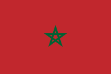
| Capital: | Rabat |
|---|---|
| Languages: | Arabic, Berber |
| Currency: | Moroccan Dirham (MAD) |
| Population: | 35,581,294 |
Morocco, officially the Kingdom of Morocco, is a country in
the Maghreb region of North Africa. Geographically, Morocco
is characterized by a rugged mountainous interior and large
portions of desert. It is one of only three countries (with
Spain and France) to have both Atlantic and Mediterranean
coastlines. The Arabic name al-Mamlakah al-Maghribiyah and
Al-Maghrib are commonly used as alternate names. Morocco has
a population of over 33.8 million and an area of 446,550 km2
(172,410 sq mi) or 710,850 km2 (274,460 sq mi) including
Western sahara. Its political capital is Rabat, although the
largest city is Casablanca; other major cities include
Marrakesh, Tangier, Tetouan, Salé, Fes, Agadir, Meknes,
Oujda, Kenitra, and Nador. A historically prominent regional
power, Morocco has a history of independence not shared by
its neighbours. Its distinct culture is a blend of Berber,
African, Arab and European influences. Morocco claims the
non-self-governing territory of Western Sahara as its
Southern Provinces. Morocco annexed the territory in 1975,
leading to a guerrilla war with indigenous forces until a
cease-fire in 1991. Peace processes have thus far failed to
break the political deadlock. Morocco is a constitutional
monarchy with an elected parliament. The King of Morocco
holds vast executive and legislative powers, especially over
the military, foreign policy and religious affairs.
Executive power is exercised by the government, while
legislative power is vested in both the government and the
two chambers of parliament, the Assembly of Representatives
and the Assembly of Councillors. The king can issue decrees
called dahirs which have the force of law. He can also
dissolve the parliament after consulting the Prime Minister
and the president of the Constitutional court. Morocco's
predominant religion is Islam, while the Languages are
Berber and Arabic. Moroccan Arabic, referred to as Darija,
and French are also widely spoken. Morocco is an influential
member of the Arab League and a part of the Union for the
Mediterranean. It has the sixth-largest economy in Africa.
Pakistan
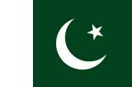
| Capital: | Islamabad |
|---|---|
| Languages: | English, Urdu |
| Currency: | Pakistani Rupee (PKR) |
| Population: | 207,800,000 |
Pakistan, officially the Islamic Republic of Pakistan, is a
sovereign country in South Asia. With a population exceeding
199 million people, it is the sixth most populous country
and with an area covering 796,095 km2 (307,374 sq mi), it is
the 36th largest country in the world in terms of area.
Pakistan has a 1,046-kilometre (650 mi) coastline along the
Arabian Sea and the Gulf of Oman in the south and is
bordered by India to the east, Afghanistan to the west, Iran
to the southwest and China in the far northeast
respectively. It is separated from Tajikistan by
Afghanistan's narrow Wakhan Corridor in the north, and also
shares a maritime border with Oman. The territory that now
constitutes Pakistan was previously home to several ancient
cultures, including the Mehrgarh of the Neolithic and the
Bronze Age Indus Valley Civilisation, and was later home to
kingdoms ruled by people of different faiths and cultures,
including Hindus, Indo-Greeks, Muslims, Turco-Mongols,
Afghans and Sikhs. The area has been ruled by numerous
empires and dynasties, including the Indian Mauryan Empire,
the Persian Achaemenid Empire, Alexander of Macedonia, the
Arab Umayyad Caliphate, the Mongol Empire, the Mughal
Empire, the Durrani Empire, the Sikh Empire and the British
Empire. As a result of the Pakistan Movement led by Muhammad
Ali Jinnah and the subcontinent's struggle for independence,
Pakistan was created in 1947 as an independent nation for
Muslims from the regions in the east and west of
Subcontinent where there was a Muslim majority. Initially a
dominion, Pakistan adopted a new constitution in 1956,
becoming an Islamic republic. A civil war in 1971 resulted
in the secession of East Pakistan as the new country of
Bangladesh. Pakistan is a federal parliamentary republic
consisting of four provinces and four federal territories.
It is an ethnically and linguistically diverse country, with
a similar variation in its geography and wildlife. A
regional and middle power, Pakistan has the seventh largest
standing armed forces in the world and is also a nuclear
power as well as a declared nuclear-weapons state, being the
only nation in the Muslim world, and the second in South
Asia, to have that status. It has a semi-industrialised
economy with a well-integrated agriculture sector, its
economy is the 26th largest in the world in terms of
purchasing power and 45th largest in terms of nominal GDP
and is also characterized among the emerging and
growth-leading economies of the world.[citation needed],The
post-independence history of Pakistan has been characterised
by periods of military rule, political instability and
conflicts with neighbouring India. The country continues to
face challenging problems, including overpopulation,
terrorism, poverty, illiteracy, and corruption. Despite
these factors it maintains strategic endowments and
development potential while it has made substantial progress
in reducing poverty giving it the second lowest headcount
poverty rate in South Asia. It is ranked 16th on the 2012
Happy Planet Index, while its stock exchange has been among
the highest performing in Asia. It is a member of the United
Nations, the Commonwealth of Nations, the Next Eleven
Economies, Shanghai Cooperation Organisation, ECO, UfC, D8,
Cairns Group, Kyoto Protocol, ICCPR, RCD, UNCHR, Asian
Infrastructure Investment Bank, Group of Eleven, CPFTA,
Group of 24, the G20 developing nations, ECOSOC, founding
member of the Organisation of Islamic Cooperation, SAARC and
CERN.
Russia
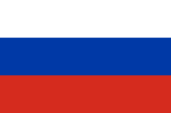
| Capital: | Moscow |
|---|---|
| Languages: | Russian |
| Currency: | Russian Ruble (RUB) |
| Population: | 146,804,372 |
Russia, also officially known as the Russian Federation, is
a country in northern Eurasia. It is a federal
semi-presidential republic. At 17,075,400 square kilometres
(6,592,800 sq mi), Russia is the largest country in the
world, covering more than one-eighth of the Earth's
inhabited land area. Russia is the world's ninth most
populous country with nearly 144 million people in November
2014. Extending across the entirety of northern Asia and
much of Eastern Europe, Russia spans eleven time zones and
incorporates a wide range of environments and landforms.
From northwest to southeast, Russia shares land borders with
Norway, Finland, Estonia, Latvia, Lithuania and Poland (both
with Kaliningrad Oblast), Belarus, Ukraine, Georgia,
Azerbaijan, Kazakhstan, China, Mongolia, and North Korea. It
shares maritime borders with Japan by the Sea of Okhotsk and
the U.S. state of Alaska across the Bering Strait. The
nation's history began with that of the East Slavs, who
emerged as a recognizable group in Europe between the 3rd
and 8th centuries AD. Founded and ruled by a Varangian
warrior elite and their descendants, the medieval state of
Rus arose in the 9th century. In 988 it adopted Orthodox
Christianity from the Byzantine Empire, beginning the
synthesis of Byzantine and Slavic cultures that defined
Russian culture for the next millennium. Rus' ultimately
disintegrated into a number of smaller states; most of the
Rus' lands were overrun by the Mongol invasion and became
tributaries of the nomadic Golden Horde in the 13th century.
The Grand Duchy of Moscow gradually reunified the
surrounding Russian principalities, achieved independence
from the Golden Horde, and came to dominate the cultural and
political legacy of Kievan Rus'. By the 18th century, the
nation had greatly expanded through conquest, annexation,
and exploration to become the Russian Empire, which was the
third largest empire in history, stretching from Poland in
Europe to Alaska in North America. Following the Russian
Revolution, the Russian Soviet Federative Socialist Republic
became the largest and leading constituent of the Soviet
Union abbreviated to USSR, the world's first
constitutionally socialist state and a recognized world
superpower, and a rival to the United States which played a
decisive role in the Allied victory in World War II. The
Soviet era saw some of the most significant technological
achievements of the 20th century, including the world's
first human-made satellite, and the first man in space. By
the end of 1990, the USSR/Soviet Union had the world's
second largest economy, largest standing military in the
world and the largest stockpile of weapons of mass
destruction. Following the partition of the Soviet Union in
1991, fourteen Independent republic nations emerged from the
USSR (Armenia, Azerbaijan, Belarus, Estonia, Georgia,
Kazakhstan, Kyrgyzstan, Latvia, Lithuania, Moldova,
Tajikistan, Turkmenistan, Ukraine, Uzbekistan). As the
largest, most populous, and most economically developed
republic, the Russian SFSR reconstituted itself as the
Russian Federation and is recognized as the continuing legal
personality (the sole successor state) of the Soviet Union.
The Russian economy ranks as the tenth largest by nominal
GDP and sixth largest by purchasing power parity in 2015.
Russia's extensive mineral and energy resources, the largest
reserves in the world, have made it one of the largest
producers of oil and natural gas globally. The country is
one of the five recognized nuclear weapons states and
possesses the largest stockpile of weapons of mass
destruction. Russia was the world's second biggest exporter
of major arms in 2010-14, according to SIPRI data. According
to the Fragile States Index of 2015 by Fund for Peace
educational institution, Russia is in the 65th place in the
"High Warning" section. High values of group grievance,
human rights, security apparatus and factionalized elites
indicators are major contributors to the overall index of
Russia. Russia is a great power and a permanent member of
the United Nations Security Council, a member of the G20,
the Council of Europe, the Asia-Pacific Economic Cooperation
(APEC), the Shanghai Cooperation Organisation, the
Organization for Security and Co-operation in Europe (OSCE),
and the World Trade Organization (WTO), as well as being the
leading member of the Commonwealth of Independent States
(CIS), the Collective Security Treaty Organization (CSTO)
and one of the 5 members of the Eurasian Economic Union
(EEU), along with Armenia, Belarus, Kazakhstan and
Kyrgyzstan.
Singapore
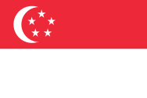
| Capital: | Singapore |
|---|---|
| Languages: | English, Malay, Mandarin, Tamil |
| Currency: | Singapore Dollar (SGD) |
| Population: | 5,638,700 |
Singapore, officially the Republic of Singapore, and often
referred to as the Lion City, the Garden City, and the Red
Dot, is a leading global city-state and island country in
Southeast Asia. It lies one degree (137 km; 85 mi) north of
the equator, at the southernmost tip of continental Asia and
peninsular Malaysia, with Indonesia's Riau Islands to the
south. Singapore's territory consists of the diamond-shaped
main island (commonly referred to as Singapore Island and
Pulau Ujong in Malay) and more than 60 significantly smaller
islets. Since the 1960s, ongoing land reclamation has
increased Singapore's land area, which is highly urbanised,
by at least 20%. The islands were settled from the second
century AD by a series of local empires. In 1819, Sir
Stamford Raffles founded Singapore as a trading post of the
East India Company; after the company collapsed, the islands
were ceded to Britain and became part of its Straits
Settlements in 1826. During World War II, Singapore was
occupied by Japan. It became independent from Britain in
1963, by uniting with other former British territories to
form Malaysia, but was expelled two years later over
ideological differences. After early years of turbulence,
and despite lacking natural resources and a hinterland, the
nation developed rapidly as an Asian tiger economy, based on
external trade and its human capital. Singapore is a global
commerce, financial and transportation hub. Its standings
include: "Easiest place to do business" (World Bank) for ten
consecutive years, most "Technology-ready" nation (EIU), top
"International meetings city" (UIA), city with "Best
investment potential" (BERI), 2nd-most competitive country
(WEF), 3rd-largest foreign exchange centre, 4th-largest
financial centre, 3rd-largest oil refining and trading
centre and one of the top two busiest container ports since
the 1990s. Singapore's best known global brands include
Singapore Airlines and Changi Airport, both amongst the
most-awarded in their industry; SIA is also rated by Fortune
surveys as Asia's "most admired company". For the past
decade, it is the only Asian country with the top AAA
sovereign rating from all major credit rating agencies,
including S&P, Moody's and Fitch. Singapore ranks high
on key measures of national social policies. It leads Asia,
and 9th globally, on the Human Development Index, including
education, healthcare, life expectancy, quality of life,
personal safety, housing. Although income inequality is
high, 90% of citizens own their homes, and the country has
one of the highest per capita incomes. The cosmopolitan
nation is home to 5.5 million residents, 38% of whom are
permanent residents and other foreign nationals.
Singaporeans are mostly bilingual, with English as its
common language and a second mother-tongue language. Its
cultural diversity is reflected in its extensive "hawker"
cuisine and major ethnic festivals—Chinese, Malay, Indian,
Western—which are all national holidays. In 2015, Lonely
Planet and New York Times listed Singapore as their top and
6th best world destination to visit respectively. The
nation's core principles are meritocracy, multiculturalism
and secularism. It is noted for its effective, pragmatic and
incorrupt governance and civil service, which together with
its rapid development policies, is widely cited as the
"Singapore model". Gallup polls shows 84% of its residents
expressed confidence in the national government, one of the
highest ratings recorded. Singapore has significant
influence on global affairs relative to its size, leading
some analysts to classify it as a middle power. It is ranked
as Asia's most influential city and 4th in the world by
Forbes. Singapore is a unitary multiparty parliamentary
republic, with a Westminster system of unicameral
parliamentary government. The People's Action Party has won
every election since self-government in 1959. One of the
five founding members of the Association of Southeast Asian
Nations (ASEAN), Singapore is also the host of the
Asia-Pacific Economic Cooperation (APEC) Secretariat, and a
member of the East Asia Summit, the Non-Aligned Movement,
and the Commonwealth of Nations.
Thailand
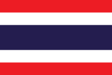
| Capital: | Bangkok |
|---|---|
| Languages: | Thai |
| Currency: | Baht (THB) |
| Population: | 69,428,453 |
Thailand, officially the Kingdom of Thailand, formerly known
as Siam, is a country at the centre of the Indochinese
peninsula in Mainland Southeast Asia. It is bordered to the
north by Myanmar and Laos, to the east by Laos and Cambodia,
to the south by the Gulf of Thailand and Malaysia, and to
the west by the Andaman Sea and the southern extremity of
Myanmar. Its maritime boundaries include Vietnam in the Gulf
of Thailand to the southeast, and Indonesia and India on the
Andaman Sea to the southwest. Thailand is governed by a
military junta that took power in the May 2014 coup d'état.
Its monarchy is headed by King Bhumibol Adulyadej, who is
called Rama IX as he is the ninth monarch of the Chakri
Dynasty, and has reigned since 1946 as the world's
longest-serving head of state and the country's
longest-reigning monarch (he has reigned for 69 years, 179
days),With a total area of approximately 513,000 km2
(198,000 sq mi), Thailand is the world's 51st-largest
country. It is the 20th-most-populous country in the world,
with around 66 million people. The capital and largest city
is Bangkok, which is Thailand's political, commercial,
industrial, and cultural hub. About 75-95% of the population
is ethnically Tai, which includes four major regional
groups: central Thai, northeastern Thai (Khon [Lao] Isan),
northern Thai (Khon Mueang); and southern Thai. Thai
Chinese, those of significant Chinese heritage, are 14% of
the population, while Thais with partial Chinese ancestry
comprise up to 40% of the population. Thai Malays represent
3% of the population, with the remainder consisting of Mons,
Khmers and various "hill tribes". The country's official
language is Thai and the primary religion is Theravada
Buddhism, which is practised by around 95% of the
population. Thailand experienced rapid economic growth
between 1985 and 1996, becoming a newly industrialised
country and a major exporter. Manufacturing, agriculture,
and tourism are leading sectors of the economy. Among the
ten ASEAN countries, Thailand ranks third in quality of
life. and the country's HDI is rated as "high". Its large
population and growing economic influence have made it a
middle power in the region and around the world.
Venezuela
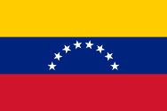
| Capital: | Caracas |
|---|---|
| Languages: | Spanish |
| Currency: | Bolívar Soberano (VES) |
| Population: | 28,887,118 |
Venezuela, officially the Bolivarian Republic of Venezuela,
is a federal republic located on the northern coast of South
America. It is bordered by Colombia on the west, Brazil on
the south, Guyana on the east, and the islands of Trinidad
and Tobago to the north-west. Venezuela's territory covers
around 916,445 km2 (353,841 sq mi) with an estimated
population around 33,221,865. Venezuela is considered a
state with extremely high biodiversity, with habitats
ranging from the Andes Mountains in the west to the Amazon
Basin rain-forest in the south, via extensive llanos plains
and Caribbean coast in the center and the Orinoco River
Delta in the east. The country faces severe social and
economic problems, such as high inflation (the highest in
the world), shortage of basic goods in the markets, high
criminality and media censorship. The territory currently
known as Venezuela was colonized by Spain in 1522 amid
resistance from indigenous peoples. In 1811, it became one
of the first Spanish-American colonies to declare
independence, which was not securely established until 1821,
when Venezuela was a department of the federal republic of
Gran Colombia. It gained full independence as a separate
country in 1830. During the 19th century, Venezuela suffered
political turmoil and autocracy, remaining dominated by
regional caudillos (military strongmen) until the mid-20th
century. Since 1958, the country has had a series of
democratic governments. Economic shocks in the 1980s and
1990s led to several political crises, including the deadly
Caracazo riots of 1989, two attempted coups in 1992, and the
impeachment of President Carlos Andrés Pérez for
embezzlement of public funds in 1993. A collapse in
confidence in the existing parties saw the 1998 election of
former coup-involved career officer Hugo Chávez and the
launch of the Bolivarian Revolution, which is a type of
socialist revolution, beginning with a 1999 Constituent
Assembly to write a new Constitution of Venezuela. This new
constitution officially changed the name of the country to
República Bolivariana de Venezuela (Bolivarian Republic of
Venezuela). Venezuela is a federal presidential republic
consisting of 23 states, the Capital District (covering
Caracas), and federal dependencies (covering Venezuela's
offshore islands). Venezuela also claims all Guyanese
territory west of the Essequibo River, a
159,500-square-kilometre (61,583 sq mi) tract dubbed Guayana
Esequiba or the Zona en Reclamación (the "zone being
reclaimed"). Venezuela is among the most urbanized countries
in Latin America; the vast majority of Venezuelans live in
the cities of the north, especially in the capital, Caracas,
which is also the largest city in Venezuela. Since the
discovery of oil in the early 20th century, Venezuela has
the world's largest oil reserves and has been one of the
world's leading exporters of oil. Previously an
underdeveloped exporter of agricultural commodities such as
coffee and cocoa, oil quickly came to dominate exports and
government revenues. The 1980s oil glut led to an external
debt crisis and a long-running economic crisis, in which
inflation peaked at 100% in 1996 and poverty rates rose to
66% in 1995 as (by 1998) per capita GDP fell to the same
level as 1963, down a third from its 1978 peak. The recovery
of oil prices in the early 2000s gave Venezuela oil funds
not seen since the 1980s. The Venezuelan government then
initiated populist/revisionist policies that initially
boosted the Venezuelan economy and increased social
spending, significantly reducing economic inequality and
poverty. Such populist policies were questioned since their
initiation and the over dependence on oil funds led to
overspending on social programs while strict government
polices, which were initially supposed to prevent capital
flight, created difficulties for Venezuela's import-reliant
businesses. Venezuela under Hugo Chávez suffered "one of the
worst cases of Dutch Disease in the world" due to the
Bolivarian government's large dependence on oil sales.
Poverty and inflation began to increase into the 2010s.
Nicolás Maduro was elected in 2013 after the death of
Chavez. Venezuela devalued its currency in February 2013 due
to the rising shortages in the country with shortages in
Venezuela including milk, flour, and other necessities and
malnutrition then increasing, especially among children. In
2014, Venezuela entered an economic recession. In 2015,
Venezuela had the world's highest inflation rate with the
rate surpassing 100%, becoming the highest in the country's
history. Economic problems, as well as crime and corruption,
were some of the main causes of the 2014-15 Venezuelan
protests, which left more than 40 protesters killed.